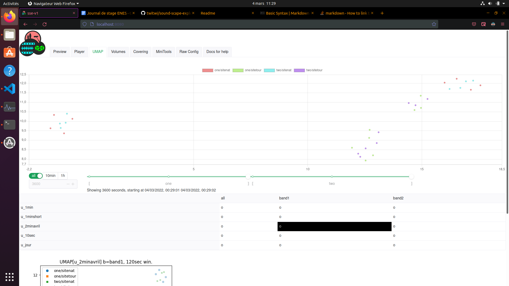
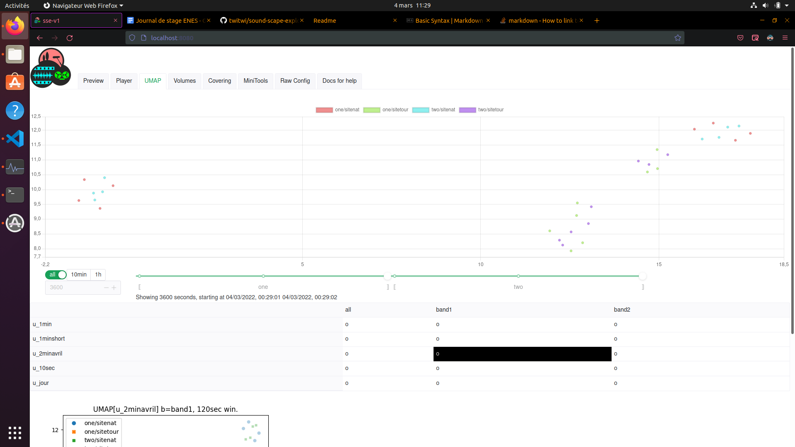
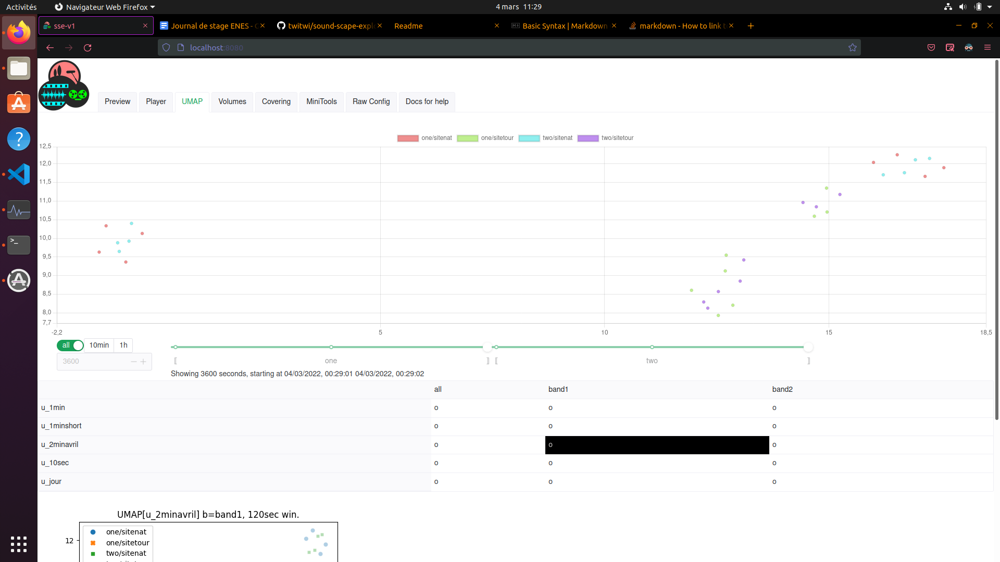

Available in UNIX and Windows platform and ready-made in Virtual-Box
Step 0 : Donwload project
Step 1 : Download and install required Python
Pip Download the get-pip.py file go to your directory Download
cd Download
python3 get-pip.py
NodeJS You can avoid to install chocolatery extension. not mandatory
Step 2 : Install required python libraries
pip install numpy
pip install matplotlib
pip install seaborn
pip install torchaudio
pip install librosa
pip install xlrd
pip install pandas
pip install umap-learn
pip install openpyxl
pip install numpy==1.20
From your
sudo apt update
Used to re-synchronize the package index files from their sources. The indexes of available packages are fetched from the location(s) specified in /etc/apt/sources.list(5). An update should always be performed before an upgrade or dist-upgrade.
sudo apt upgrade
Used to install the newest versions of all packages currently installed on the system from the sources enumerated in /etc/apt/sources.list(5). Packages currently installed with new versions available are retrieved and upgraded; under no circumstances are currently installed packages removed, nor are packages that are not already installed retrieved and installed. New versions of currently installed packages that cannot be upgraded without changing the install status of another package will be left at their current version. An update must be performed first so that apt-get knows that new versions of packages are available.
NOTE : if you not find
sudo apt install python3.8
try
sudo apt install pip #version 20.0.2
if not work use
sudo apt install python3-pip
sudo apt install npm
sudo apt install curl
curl is a tool to transfer data from or to a server
sudo apt install ffmpeg
is a very fast video and audio converter that can also grab from a live audio/video source
pip install numpy
pip install matplotlib
pip install seaborn
pip install torchaudio
pip install librosa
pip install xlrd
pip install pandas
pip install umap-learn
pip install openpyxl
The helper script
install scripts project with these modules
pip install -e ./scripts
create specific directory
mkdir ./sample/generated ./sample/features
these 3 commande will create shortcut (do not duplicate content or the sources)
ln -s ../sample/features/
ln -s ../sample/generated/
ln -s ../sample/audio/
[Hightly recommended] To activate sse command (either in your .bashrc, or once in each terminal that needs it)
this command bellow permit to add in you shell sse command
echo "PATH=\"$PATH:~/.local/\" >> ~/.profile"
check if it is well install by open (temporarly) a new tab/window terminal and tap sse. If somethis it diplay like
Usage: sse [OPTIONS] COMMAND [ARGS]...
It's okay and you can close this temporarly tab/window terminal
[Not Mandatory] To activate autocompletion (either in your .bashrc, or once in each terminal that needs it)
eval "$(\_SSE_COMPLETE=bash_source sse)"
or get it with
sse help
To import your audio sources, you must to drop it into [rootProject]/sample/audio/ and respect some rules :
20210423_105000 this is correct and equivalent to 20210423T105000.YOU MUST TO CHANGE YOUR CONFIG.XLSX
Here you have two choices, the first one is to use the mini tool to help you to fill the config.xlsx file.
Or the seconde choice is to write directly the config.xlsx file.
I advise you to use first option. In fact if you have multiple audio files, it will be tiring to tap every file without error that will be a lake of time. IF YOU CHOSE THE FIST OPTION YOU MUST DO STEP 8 and 9 NOW AND FALL BACK HERE
From D3 this column is free name. Column E defines verticise.The first number defines segmentation of frequencies by step of 64. The second number defines the lowest frequencies start. These numbers are separated by a short hyphen '-'.
For example if you want all frequencies you segmentate the frequencies by 64 that corresponds for all frequencies and you take the lowest frequency : 0.
Another example if you want segmentate frequencies by 3 you multiply 64 by 3 that corresponds to 192 and you want the two first parts (0 to 64 and 64 to 128) you need to put in cells :
Do the Neuronal Network extraction from original input with all files says in config.xlsx
sse extract all
this operation will take a while depending of your dataset.
Open a new tab terminal or new window terminal let's open the oldest tab/window terminal
sse extract preview
If you have an error in red like this
Assertion atempo->position[0] <= stop_here failed at src/libavfilter/af_atempo.c:501
don't stay on it, you can just close the terminal to avoid write problem go to the next step.
Move to this directory if it not the case already in your terminal
cd [rootProject]/sse-v1/
sse show config --json > generated/ghost-config.json
IF YOU HAVE DONE ALREADY THIS PART DON'T DO IT AGAIN
if not the case , go to this path
cd [rootProject]/sse-v1/
DO NOT RUN THIS command except expert => npm audit fix
run this below
These 3 command will install modules from the Node Package
npm i -D naive-ui
npm i -D vfonts
npm i -D worklet-loader
Change of directory if not teh same already
cd [rootProject]/sse-v1/
run the python server (default port is 9876)
sse cors-http-server
Next time you can use shortname command
sse chs
in case of error during launch of the nodeJS server
Control + Delete
npm remove chart.js
npm install chart.js
run the nodeJS server at same path (default port is 8080)
npm run serve
on your favorite web browser, go to http://localhost:8080.

if you see something like this, continue to step 10
Otherwise, if you see something like this
And you have done the first choice in Step 5 part 2, it's time to fall back to step 5 part 2.
Open a new tab terminal or new window terminal and go to it, let's open the oldest tab/window terminal
From [rootProject]/sse-v1/ path
You will compute the umap.
sse compute umap
Or compute the covering
sse compute covering
Or compute the volume
sse compute volume
All done
WARNING : Each time you change audio file (remove, add, edit in folder /audio) you should to change your config.xlsx + run this command
cd [rootProject]/sse-v1/
sse show config --json > generated/ghost-config.json
Run a terminal with 3 tabs or 3 terminal and **for each** of them go to
cd [rootProject]/sse-v1/
In first tab/terminal, run
sse chs
it's also called in long name
sse cors-http-server
In second tab/terminal, run
npm run serve
Required action : None Reason : Parse data into torch audio, a Neuronal network and permit to execute action 3 : Command :
sse extract all
Required action : None
Reason : Show this on browser
Command :
sse extract preview
(Uniform Manifold Approximation and Projection for Dimension Reduction)
Required action : Action 1
Reason : Show this on browser by action 6 and find biologistic clues
Command :
sse compute umap
Required action : Action 1
Reason : Show this on browser by action 6 and find biologistic clues
Command :
sse compute volume
Required action : Action 1
Reason : Show this on browser by action 6 and find biologistic clues during a time period like a day
Command :
sse compute covering
Required actions : Action 3,4,5
Open your favorite browser and go to
http://localhost:8080/
Show the configuration done in [rootProject]/sample/config.xlsx in case of step 7 for unix install have been done.
Il you want to refres the newest configuration after edit config.xlsx, you need to run this command in third tab
From [rootProject]/sse-v1/ path
sse show config --json > generated/ghost-config.json
Permit to split the original audio sound into N Bands of frequencies (Hz) Due to the softwar configuration, we can choose only by step of 64
Permit to see during time the volume of sounds
Show in 2D an projection of the matricies of 128d for each second
You can move to see during time each point corresponding to the time
Permit to see an logger and see the specificities of an logger. For example to see the period of recording, see an zoom of the logger
Permit to see an preview of an logger. You can config this into minitool.
run the server
sse cors-http-server
it's also called in shortname
sse chs
sse extract all
if a lot of files and you know they have each a 60s duration
sse show audio-span-splot -s 60
else (few files or patient)
sse show audio-span-splot
sse extract preview
sse compute volume
sse compute covering
sse compute umap
sse help
copy the config generators
sse chs
(cd [rootProject]/sse-v1 ; npm run dev)
(cd [rootProject]/sample sse show config --json > generated/ghost-config.json)
made a vue project
output
Vue CLI v4.5.13
? Please pick a preset: Manually select features
? Check the features needed for your project: Choose Vue version, Babel, CSS Pre-processors, Linter
? Choose a version of Vue.js that you want to start the project with 3.x
? Pick a CSS pre-processor (PostCSS, Autoprefixer and CSS Modules are supported by default): Sass/SCSS (with dart-sass)
? Pick a linter / formatter config: Prettier
? Pick additional lint features: Lint on save
? Where do you prefer placing config for Babel, ESLint, etc.? In dedicated config files
mashed-up an icon (in media/, exported to 256px)
using the icon in the vue project
inkscape media/icons.svg -o media/sse-icon.png
cp -f media/sse-icon.png sse-v1/src/assets/logo.png
convert sse-v1/src/assets/logo.png sse-v1/public/favicon.ico
cp -t log1/ '........./Logger1/20210429_180000.WAV' ###### strange...
cp -t log2/ '........./Logger2/20210429_180000.WAV'
ffmpeg -i 20210429_180000.WAV -ss 0 -t 60 -c copy chunk-20210429_180000.WAV
ffmpeg -i 20210429_180000.WAV -ss 60 -t 60 -c copy chunk-20210429_180100.WAV
ffmpeg -i 20210429_180000.WAV -ss 120 -t 60 -c copy chunk-20210429_180200.WAV
ffmpeg -i 20210429_180000.WAV -ss 180 -t 60 -c copy chunk-20210429_180300.WAV
ffmpeg -i 20210429_180000.WAV -ss 600 -t 60 -c copy chunk-20210429_181000.WAV
ffmpeg -i ../log2/20210429_180000.WAV -ss 1000 -t 60 -c copy chunk-20210429_180000.WAV
ffmpeg -i ../log2/20210429_180000.WAV -ss 1060 -t 60 -c copy chunk-20210429_180100.WAV
ffmpeg -i ../log2/20210429_180000.WAV -ss 1120 -t 60 -c copy chunk-20210429_180200.WAV
ffmpeg -i ../log2/20210429_180000.WAV -ss 1180 -t 60 -c copy chunk-20210429_180300.WAV
ffmpeg -i ../log2/20210429_180000.WAV -ss 1600 -t 60 -c copy chunk-20210429_181000.WAV
sse extract all -f
sse extract preview
sse show band-freqs
sse show list-sites
sse show audio-span-splot -s 60
sse show audio-span-splot
For now, we use python to save a json of the config, to avoid implementing the parser (although this is easy-ish):
sse help
for naive
npm i -D naive-ui
npm i -D vfonts
npm i -D worklet-loader
cd sse-v1/
npm run serve
and the data server
cd sample/
sse cors-http-server
```
npm run build where=../sample
sed -i -e 's@="/@="@g' dist/index.html sed -i -e 's@http://localhost:9876/@'"$where"'/@g' dist/js/_.js
```
python3 .creatdoc.py